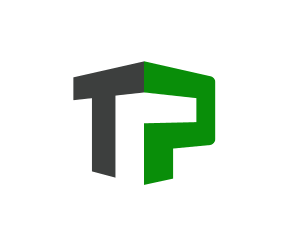
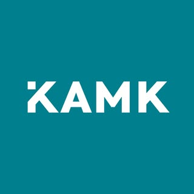

Lyhyt kuvaus projektista. Mitä teknologioita käytit? Esim. Python, Linux, Docker.

Verkkokauppa, jossa myydään pienkoneita ja tarvikkeita.
Verkkosivusto, jossa tarjotaan teollisuuden palveluita ja pienkoneita.

Opiskelen tällä hetkellä Kajaanin ammattikorkeakoulussa tieoto ja viestintätekniikan insinööriksi.
Koulutuksen suuntautuminen on datasta teköälyyn joka erikoistut datan hallintaan ja käsittelyyn sekä tekoälyratkaisujen kehittämiseen.
Olen intohimoinen ohjelmistokehittäjä ja Linux-harrastaja, jolla on vahva tausta verkkokaupparatkaisuista (WooCommerce) sekä IoT-järjestelmien rakentamisesta. Yhdistän työssäni liiketoimintaymmärryksen tekniseen syväosaamiseen - oli kyseessä sitten verkkokaupan konversio-optimointi tai kodin lämmitysjärjestelmän tekoälyohjaus.
Vapaa-ajallani kehitän omia automaatioratkaisuja ja ylläpidän palvelimia. Minua motivoi monimutkaisten ongelmien ratkaiseminen ja prosessien tehostaminen koodin avulla.
Kiinnostuitko? Laita viestiä.